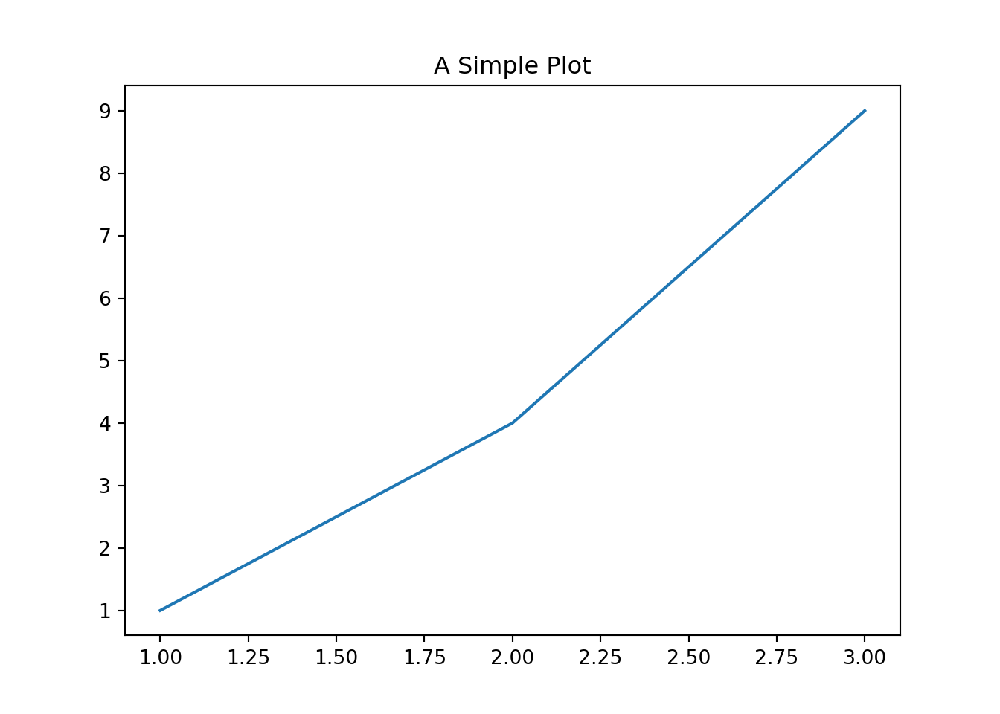

1 + 1[1] 2This chapter introduces tools that support reproducible and organized data science work. You will use VS Code, Git, GitHub, and Quarto throughout the book.
A code editor is more than a place to type. An Integrated Development Environment (IDE) brings together tools that help you write, run, and organize code efficiently. Unlike simple editors such as Notepad or TextEdit, an IDE understands your project structure, highlights syntax, suggests fixes, and connects directly to version control.
VS Code is widely used in data science because it is fast, lightweight, and highly customizable. It includes an integrated terminal, a built- in file explorer, and a rich extension system that adds support for Python, R, Git, Quarto, and Markdown. These features allow you to work productively without switching between different applications.
To install VS Code, visit the official website at https://code.visualstudio.com and download the installer for your operating system. On Windows, choose the System Installer (64-bit) and follow the default installation steps. On macOS, you may download the installer from the same page or install VS Code through Homebrew using
brew install --cask visual-studio-codeAfter installation, open VS Code and add several key extensions that support data-science work. You can install them by clicking the Extensions icon in the sidebar or by opening the command palette (Ctrl/Cmd + Shift + P) and selecting “Extensions: Install Extensions.”
VS Code also includes a built-in terminal so you can run command-line tools without switching windows. Open it by choosing View → Terminal from the menu or by pressing Ctrl+(Control + backtick). From there you can run commands such ascd,ls,git status, orpython` inside your project.
On Windows, you may want VS Code to use Git Bash instead of PowerShell. After installing Git for Windows, open the command palette (Ctrl/Cmd + Shift + P), choose “Preferences: Open User Settings (JSON),” and add the following entry:
"terminal.integrated.defaultProfile.windows": "Git Bash"You can now run cd, ls, git status, and other commands in a familiar Unix-like environment directly inside VS Code.
ds4hs/.ds4hs folder in VS Code.ls to view your project files.git init initializes a repository.git status shows changes.git add stages files.git commit -m "message" records changes.git diff displays differences.git push sends changes to GitHub.git pull retrieves updates.Version control is a foundational skill for data science because it treats your work as a living project with a complete history. Git lets you track every change you make, revert mistakes, create experimental branches, and collaborate without overwriting anyone’s work. Unlike saving multiple file versions by hand (e.g., project_final_v12_REAL), Git provides a precise, automatic timeline of your edits. This makes your work reproducible, auditable, and shareable — all essential habits for scientific computing.
Git offers a lightweight yet powerful system for managing all the changes in your project. It acts as “undo for your entire project,” not just for a single file, meaning you can always go back to a working state. For data science, reproducibility is everything: Git keeps a full record of how your analysis evolved, so others (and future you) can see exactly how results were produced. When working with classmates or research teams, Git prevents accidental overwriting and makes collaboration structured instead of chaotic.
Installing Git - macOS: brew install git
- Windows: Download Git for Windows (Git Bash included) from
https://git-scm.com/downloads - Linux: Install from your system’s package manager
After installation, configure Git the first time you use it:
git config --global user.name "Your Name"
git config --global user.email "your@email.com"Verify everything is correctly installed:
git --version
git config --listGit works best when your project is organized as a clean folder containing scripts, Quarto files, and documentation.
Common Git commands:
git init — start a new repository in your current foldergit status — see what has changedgit add — stage changesgit commit — save changes with a messageExample workflow:
cd ds4hs
git init
git status
git add .
git commit -m "first commit: added folder structure"A .gitignore file helps you avoid uploading unnecessary files such as large raw datasets, temporary folders, or system files. A typical example:
data/
*.csv
*.DS_StoreGitHub is the online home for your Git repositories. It allows you to publish your work, share it with others, and sync across computers.
Typical GitHub workflow:
git remote add origin https://github.com/yourname/ds4hs.git
git branch -M main
git push -u origin maingit clone https://github.com/someone/project.gitds4hs folder (if not already created), initialize it as a Git repository, and make at least two commits showing meaningful progress..gitignore file that excludes data, temporary files, or OS files on your system. Verify with git status that the ignored files do not appear.ds4hs project using git push.ds4hs project by adding a README, commit the change, and push it to GitHub.Quarto is the modern tool for writing documents that combine text, code, figures, and results in one place. Instead of keeping separate Word files, screenshots, exported plots, and loose scripts, Quarto keeps everything together and reruns your analysis whenever data or code change. This makes work transparent, reproducible, and easy to review. Data scientists use Quarto because it replaces Word and PowerPoint entirely for technical documents, reports, and notebooks, and naturally forces better project habits. When teaching or doing projects, Quarto helps your work look professional while keeping the focus on reasoning and evidence rather than formatting.
To use Quarto, you need two things:
Quarto CLI
Download and install from https://quarto.org/docs/get-started This gives you the command-line tool quarto for rendering documents. After installation, verify:
quarto checkQuarto Extension in VS Code
Open the Extensions panel, search for Quarto, and install it. This adds syntax highlighting, preview tools, and convenient buttons for rendering.
Rendering formats
With the extension installed, you can render a .qmd file directly to HTML or PDF using the “Render” button in VS Code or by running
quarto render myfile.qmdPDF output requires a LaTeX installation (TinyTeX or TeX Live); HTML works out of the box.
A basic Quarto document has three components:
YAML header
Appears at the top between --- lines and controls title, author, format, and other options.
---
title: "My Document"
format: html
---Markdown body
This is where you write text, using the same Markdown syntax you already know: headings, emphasis, lists, links, and so on.
Code chunks
Code blocks that run during rendering and insert their results automatically. Quarto supports many languages.
1 + 1[1] 2print("hello quarto")hello quartoA simple workflow for your first Quarto notebook:
my_first.qmd.Example structure:
---
title: "My First Quarto Notebook"
format: html
---Write some text:
This is my first Quarto document. Below is a simple plot created in
Python.Insert a plot:
import matplotlib.pyplot as plt
plt.plot([1, 2, 3], [1, 4, 9])
plt.title("A Simple Plot")
plt.show()
Render using the VS Code “Render” button or:
quarto render my_first.qmd.qmd file titled “My First Quarto Notebook.”Python is the most widely used language in modern data science, and it is an excellent first language for high school students. Its clean syntax allows beginners to focus on ideas instead of punctuation, and its large ecosystem means almost anything you want to do already has a library that helps you do it. For our purposes, Python will serve as the main tool for writing code, analyzing data, producing graphics, and connecting all of these pieces inside a Quarto notebook.
Python has earned its central place in data science because it balances power and readability. It comes with “batteries included,” meaning the basic installation already provides many useful tools. Its syntax reads almost like English, making it easier to learn than most languages. Most importantly, the Python ecosystem is enormous — libraries like pandas for data analysis, matplotlib and seaborn for plots, and scikit-learn for machine learning allow students to progress quickly from small ideas to real discoveries. While R is also a strong choice, especially for statistics, this book will use Python as the default and treat R as an optional companion language.
You have two reliable options for installation, and either one works well in practice.
After installation, verify that Python works by opening Git Bash or Terminal and typing:
python --versionYou should see something like Python 3.12.1. If you see an error, revisit the installation steps.
Python programming begins with building blocks. Students should spend time in a Quarto notebook writing small code chunks, running them, and modifying them to observe how the machine responds.
Core building blocks to practice * Variables and basic types python x = 5 name = "Ada" pi = 3.14159
Lists
numbers = [1, 2, 3, 4, 5]Dictionaries
student = {"name": "Hana", "grade": 10, "favorite_color": "blue"}Reading data Using pandas after installing it:
import pandas as pd
df = pd.read_csv("data.csv")Simple visualization
import matplotlib.pyplot as plt
plt.plot([1,2,3,4], [10, 15, 13, 17])
plt.show()Python is often taught using Jupyter notebooks, but this book will use Quarto notebooks exclusively. Quarto lets you combine code, text, figures, and explanations in one source file that produces polished HTML or PDF output. It is more powerful, more reproducible, and easier to use with version control.
A sample Quarto Python chunk:
import pandas as pd
df = pd.read_csv("data/example.csv")
df.head()Students should write, run, and document their work entirely within Quarto. This reinforces good habits from the beginning and keeps every project reproducible.
python --version.This chapter integrates everything from Part I—command line, VS Code, Git, GitHub, Quarto, and Python/R—into a single, coherent project workflow. The goal is to let students experience how real data science work is done: create a clean folder, version it with Git, write a reproducible Quarto file, and share the final analysis.
The first step in any project is choosing a dataset that is small, clean, and intrinsically interesting. Students should select something they care about so they remain motivated while practicing the workflow. Good examples include:
Best practice is to avoid large, messy datasets for this first project. Students should aim to complete end-to-end analysis, not get stuck in heavy cleaning.
A clean folder structure helps keep the project reproducible and organized. Students use the command line to create folders and set up a Git repository.
Recommended structure:
data/ — raw datasets in CSV or JSONanalysis/ — Quarto notebooksfigures/ — automatically generated plotsREADME.md — short description of the projectKey steps:
git initgit add . and git commit -m "Initial project structure"Students should verify that Git is tracking the project by running git status and confirming the working tree is clean.
The core of the project is a reproducible Quarto notebook that explains the data, code, and conclusions in one document. The notebook should include:
A minimal workflow:
analysis/project.qmd in VS Code.figures/ folder.Students should keep text and code in one place—not separate PowerPoints, Word files, or screenshots. Quarto ensures everything is reproducible.
Once the analysis renders cleanly, students can make the project public (or share privately).
Options include:
git add ., git commit, and git pushhttps://username.github.io/ds4hs-projectThis final step completes the full data science cycle: version control, reproducible notebook, and public sharing.
data/ folder.